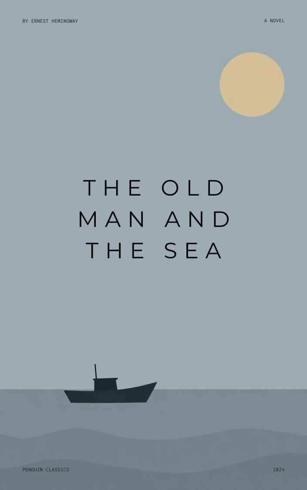

Book Details

The Old Man and the Sea
Author: Ernest Hemingway
Published: 1952 · Pages: 127 · ISBN: 978-0684801223
On Loan
An ageing Cuban fisherman battles a giant marlin far out in the Gulf Stream — a spare, powerful story of endurance, pride and grace under pressure.
Reserve This Book